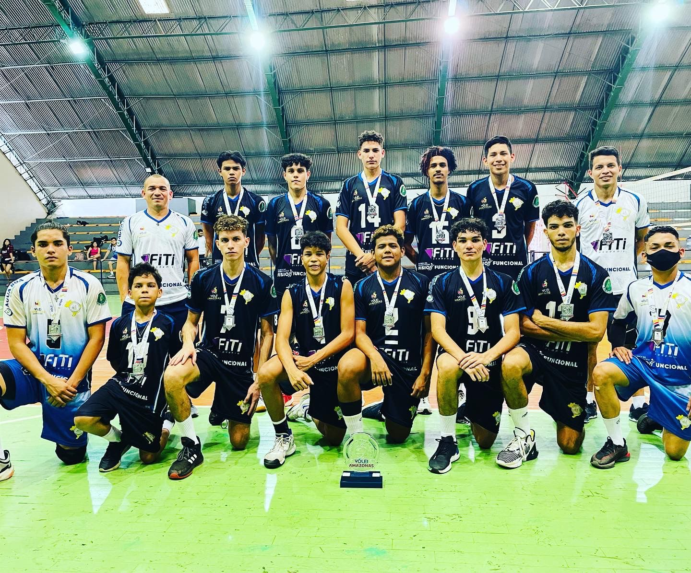

Nossa Associação
O projeto social esportivo VOLEIBOL NA ESCOLA foi criado em 2009 idealizado pelo professor WalHederson Brandao Barbosa identificando a necessidade de contribuir na formação de crianças e adolescentes esportistas na oportunidades de novos talentos para compor as equipes de rendimento de voleibol nas seleções amazonense, tendo como principal missão “ contribuir para a formação educacional e cultural de crianças e adolescente para que possam atuar com autonomia na transformação de suas realidades. Em vista que o voleibol no nosso estado estar muito carente de atletas, ou ate mesmo de clubes filiados a federação amazonense de voleibol, tomei a iniciativa de ir ao Colegio Brasileiro para que pudéssemos implantar o PROJETO este que veio no decorrer dos últimos 12 anos, dando resultados positivos na principal competição de voleibol do estado JEAS e campeonato realizados pela Federação de Voleibol e Seletivas para o Mundial Escolar. Nossas atividades na escola cumprem todas as fases da iniciação do voleibol, pois alem de fazer com que o aluno seja um grande jogador de voleibol o interessante e que contribua com o desenvolvimento humano, social e esportivo, bem como a redução de índices de criminalidade, transformação social e melhoramento da qualidade de vida.
Justificativas
A realidade de muitas criancas e adolescente de baixa renda em nosso
país e a vivencia e convivencia de rua, onde o contato com a pratica esportiva
de lazer certamente acontece, mas com um alto risco social para elas. Dessa
forma, a pratica esportivo aparece mesclado ajudando contra a marginalidade,
o contato com as drogas e, inevitavelmente, a evasao escolar. Dados de 2000,
sobre a populacao de jovens entre 15 a 17 anos da cidade de Manaus. Na
tentativa de alterar essa realidade e, principalmente por acreditar nos
beneficios que o esporte traz para criancas e adolescente, o
Projeto Esportivo do Colégio Brasileiro, tambem vincula o acesso ao projeto
a frequencia ao ensino formal e incentiva o bom rendimento escolar.
Acredita-se que a pratica de um desporto baseado em um trabalho
planejado auxiliarar no desempenho escolar da crianca, pois ela estara
desenvolvendo aspectos basicos de sua formacao, que estruturarao seu
desenvolvimento cognitivo, psicomotor e afetivo, lhe proporcionando condicoes
de se tornar uma pessoa independente, critica e consciente de seu papel na
sociedade. Diferentes trabalhos cientifico e projetos sociais ligados ao esporte
mostram que a atividade fisica, em especial no que diz respeito aos
adolescentes e criancas, tem um fator motivador extremamente positivo; assim,
se bem trabalhado o projeto extrapola e muito a esfera da competicao, sendo
seus efeitos sentindos no dia a dia destes jovens constituindo-se em um fator
importante de inclusao social.
competiçoes

Campeonato Amazonense sub 19 2020
| Categorias | Horario | Local | Dias |
| Infantil | 11:30 as 12:50 | Colegio Brasileiro | Seg / Quarta / Sexta |
| Infanto | 18:00 as 19:40 | Colegio Brasileiro | Seg / Quarta / Sexta |
| Juvenil | 19:50 as 21:30 | Colegio Brasileiro | Seg / Quinta / Sexta |
| Categorias | Horario | Local | Dias |
| Base | 18:00 as 19:00 | IEA | Terça e Quinta |
| 10:00 as 12:00 | Colegio Brasileiro | Sabado | |
| Juvenil | 19:00 as 20:00 | IEA | Terça e Quinta |
| 12:00 as 14:00 | Colegio Brasileiro | Sabado |
Documents e Dowloads
| Ficha-inscricao CBV |
Contatos:
- WalHederson: (92) 98842-2110
- Max Euller: (92) 98444-9330
- WalHederson:walvolei10@gmail.com
- Max Euller: euller.mr@gmail.com